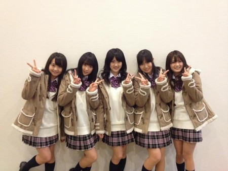
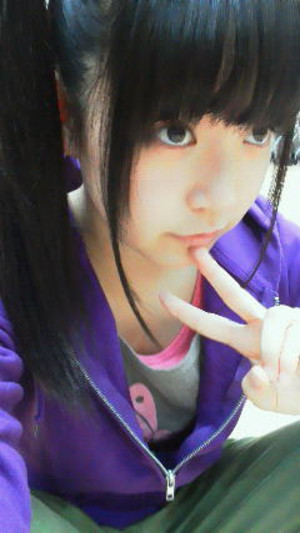
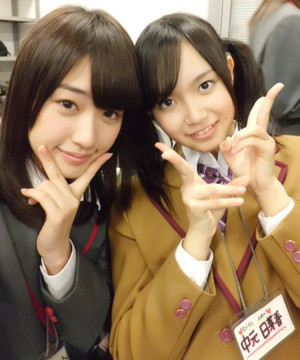
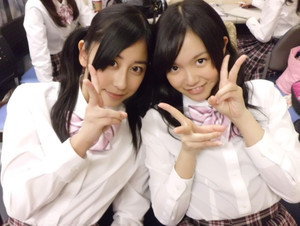

返回列表-BACK TO INDEX
はいー今日はアンダーメンバーでチーム対抗ティッシュ配り対決しました!
ひめたんたちチーム神奈川、ラゾーナ川崎と桜木町駅にお邪魔して
1800枚強の乃木ティッシュを配らせていただきました(*^^*)
急な告知にも関わらず遊びに来てくださった方、
ツイッターでフォローしてくださった方、
ありがとうございました(^ω^)
チーム神奈川...

べびまり・らりん・ちま・ひめたん・ゆっきーな
いやーそれがね、
みなさんへの告知も急で申し訳なかったんぢゃけど
ひめたんたちメンバーも今日の9時半に急に知らされたんですよ(`・ω・')
ティッシュ配る場所もみなさんとほぼおんなじタイミングで教えられたり。
ねーびっくりでしょ。
ラゾーナ川崎は、バスロータリーの前で配ることになって作戦を考えた結果
バスを降りる方々にアピールしようってことになったのですが...
ご迷惑おかけしました('・・`)
桜木町駅前は人、人、人ー!!!
もうたーくさんの方がいて、人並みに飲み込まれちゃうんじゃないかって
...言い過ぎたかもしれない(∀)わら
でも本当にたくさんの方が来てくれて、応援メッセージをいただきましたっ
中には２っの現場をハシゴしてくださった方や
ツイッターで呼びかけてくださったりも。
そしてじもてぃーゆっきーな（柏幸奈chan）とべびまり（伊藤万理華chan）のお友達まで
♪会いたかった～いぇす!きみに～
まさに歌詞の通りだったですよ∩^ω^∩
会いたかった「かもしれない」じゃなくて「会いたかった」ですよー♪
「あーひめたんだー」
「乃木坂知ってるよー」
「乃木坂ファンだよー」
「明日の収録・ミニ握・全握・個握行くよー」
「聞いたことないなあー」
「48じゃなくて46なのー」
「寒いけど頑張ってー」
「これからも応援するねー」
「今日推しになりましたー」
いろんな声を聞かせていただきました。なるほど参考になった(ω)/
さあロケバスエピソードをお話ししますよー♪
メンバーみたら何となーく想像できそうなけど
にぎやかすぎたー(o>ω<o)!!!
お話しするの好きなメンバーばっかりで、みんなずーっとつぶやいとった。
５人の誰かが常にツイッター書き込んどる状態だったの。
詳しくは公式ツイッター見てね(。・ω・。)/
メンバーの写真もいぱーい載ってるよ。
ひめたんカメラマンさんになって、みんなのサービスショット撮ってきたからね
デビュー前に間近でみなさんの声が聞けてよかった(ω)♪
この調子でみんなでもっともっと乃木坂のこと知っていただけるよう
これからも頑張るしかー!!!
とりあえず明日の番組収録の分のパワー充電完了★
ありがとうございました!
さて。
一応チーム対抗戦ということで、あのあと結果を聞きましたー。
団結力ナンバーワンのチーム神奈川、果して３チームの中で優勝したのはどこのチームしょう(*/ω＼*)ふふふ
 富山でもステキな思い出が作れることを祈っているよw
富山でもステキな思い出が作れることを祈っているよw
福井にも早くイベントで訪問できるといいね(^^)
うん、福井じゃないねｗ
あーもー毎度凡ミスごめんなさい('・・`)
これからお邪魔させてもらう所を間違えるなんて信じられませんね。
富山県民の方、福井県民の方、大変申し訳ありませんでしたっ。
1週間後の個別ではさ学の話（特にすぅちゃんの活躍ぶり）もしましょ！
でも、ホントはひめたんの話だけしてほしいって思っている？
うーん話題はおまかせいたしますよ∩^ω^∩
ひめたんのお話してくださっても嬉しいし、
すぅのお話する人なんてそういないから盛り上がるかもしれない!
「危険な好奇心」って話が個人的におすすめだけど知ってるかな?
初めて聞いたー!
怖ーい気になるー(o>ω<o)!
こりゃ調べてみるしかっ
怖い話って、なんで怖いって分ってて聞いちゃうんだろ？
今度ここで怖い話書いちゃう？？？
怖い話書いちゃったら、本当に怖くなっちゃうから怖い('・ω・`)
でもねー何で聞いちゃうんだろうなー。
ひめたん個人的に、聞いても夜には忘れてぐっすりだから大丈夫♪
ちなみに今日もメンバーと怖い話したよよよ。
ひめ様はかずみんとよく何して遊んでるの？(^-^)
何だろうなかずみん何しとるっけー。
遊ぶゆーかよくお話しするカナ？←^^
かずみんとお泊まりしたら面白いっ!２人ともお話しするの好きぢゃけ
乃木坂のことみたいな共通の話題もだけど
学校のことなんかも話すし聞く(^ω^)
ひめたんは音楽収録には参加するのカナ？
公開収録が当たったよ♪ひめたんは出演するのかな？
はい♪全員トークも音楽収録も参加するって聞いてます(^^)
最近は全員で乃木坂46の曲練習できて嬉しいなっ
ひめたんも楽しみにしてます★
昨日はレッスンで、朝は５時半に起きたから眠たーい('`)/
明日も朝早いよー。
頑張るしかっ!!!
ひめたん
2012/02/12 00:56｜
はーいひめたんです!
デビューウィークのイオンツアーの詳細が公式サイトで発表されたみたいぢゃけ
よかったらチェックしてみて下さいな('・ω・`)
ひめたんがお邪魔する場所はー...
【2月22日 (水)】
イオンモール広島府中（広島県）
時間：17時開始（握手会の受付は18時をもって終了致します。）
参加メンバー：
さゆりん(松村沙友理chan)ななせまる(西野七瀬chan)ろってぃー(川村真洋chan)ひめたん
【2月23日 (木)】
イオンモール大日（大阪府）
時間：17時開始（握手会の受付は18時をもって終了致します。）
参加メンバー：
さゆりん(松村沙友理chan)ななせまる(西野七瀬chan)ろってぃー(川村真洋chan)ひめたん
【2月25日 (土)】
イオンモール草津（滋賀県）
時間：17時開始（握手会の受付は18時をもって終了致します。）
参加メンバー：
まいやん(白石麻衣chan)ななせまる(西野七瀬chan)ろってぃー(川村真洋chan)ひめたん
【2月26日 (日)】
イオンモール高岡（富山県）
時間：16時開始（握手会の受付は17時をもって終了致します。）
参加メンバー：
まいやん(白石麻衣chan)ななせまる(西野七瀬chan)ろってぃー(川村真洋chan)ひめたん
ひめたん地方に飛ぶのは福岡県に続いて２回目(ω)
大阪府、滋賀県、富山県そしてひめたんの地元広島県。
乃木坂46として初めてお邪魔させていただくところばかりで今から楽しみです♪
それではここで、ちょっとだけ地元トークさせて下さいっ
イオンモール広島府中ソレイユ。広島の大きなショッピングセンターの1っで
家族とショッピングしたり、友達と映画観たり、楽しい思い出がいっぱいあります(∀)
ソレイユフタバ図書ＴＥＲＡさんの中にイベントスペースがあるのですが
そこはひめたんが小学生の時に、Perfumeさんと初めて握手をした場所。
ステキだな。ひめたんもあんな風に歌って踊ってみたいなって
幼いながらに憧れを覚えた場所であります(`・・)ゝ
先輩と同じステージでトークショーさせていただけるなんてああ幸せ者。
乃木坂２次オーディション以来、人生４回目の大阪、
そして初めましての滋賀、福井。
それぞれステキな思い出作るぞーおー(*^^*)!
さゆりん、まいやん、ななせまる、ろってぃー、よろしくね(^^)/
イオンモール広島府中さん
イオンモール大日さん
イオンモール草津さん
イオンモール高岡さん
お世話になりますっ!
そして握手会を楽しみにしてくださってる方、
握手会に行こっかなーどうしようかなーと検討中の方、
みなさんにお会いできるのを楽しみにしています(o>ω<o)!

ひめたん
2012/02/11 01:48｜
おはようございますっ
昨日はね、何してたかと言うとねー、
お昼はみんなで練習して、
番組の企画会議して、
夜はひめたんがずっと大好き な
な
ななちんと久々に電話しました(・∀・)!
いきなりでごめんねななちん。
ほんまに話しだしたら止まらなくなっちゃって!
結局２時間話したら真夜中になっちゃって「さすがに切ろっか」ってなったけど、
それまでずーっとひたすら話し続けてました♪
あ。ちはるんるん（斎藤ちはるchan）の時みたいに、特に伝えたいことがあって電話したわけじゃないんだけどー
久しぶりーの感動で始まり
学校のこと、
乃木坂のこと、
アクターのこと、
いろんなこと話したっ(*^^*)!
アクターおるときからななちんとはよくお話ししとったけ
いつものノリっちゃいつものノリなんだけどね
その「いつもの」がなんか懐かしくてほっこりした(^ω^)
最近東京でずっとバタバタしとったけど、
ななちんとお話ししてたら疲れがふっ飛びましたびゅーん♪
13日にHEY!HEY!HEY!出演って書いとかないと～
情報には疎いもので...ごめんなさい('・ω・`)←
付け足しておきまする。
ひめたんは親父ギャグを許せますか？(笑)
おやじぎゃく。可愛いと思います(o>ω<o)/
もうすぐ握手会だね。ひめたんはファンの前だと緊張する方？
いざ顔みたら緊張しちゃって、話したかったことぽーんって飛んでっちゃう('・ω・`)
んでも楽しみにしとるです!
高校生になったら何したいとかある？(^^♪
女子力あげる(*^^*)/
お料理とか、お裁縫とか、特訓することにしますっ
今よりもっとアイドルらしいアイドルになるよ!
部活は入るのかな？
入りたいなーとか思いつつ。検討中なう＼(^ω^)／!
ひめたんはMAX何時間起きてたことあるん？笑っ
おーる＼(^^)／
からの朝方爆睡したから、結果26時間とかだと思う。
突然電話するってことは1回は短いの？それとも長電話しちゃう？
ちはるんるんはいっつも会っとるけあえて話題が思い浮かばんかったけど
基本電話しだしたら長いと思う('・ω・`)
だからって深い話では決してないんだけれども。
ひめたんはカラオケでなに歌うの！？
意外とバラードなんだ？
いわゆる、誰もが知ってる鉄板系の曲みたいな(ω)？
いや違うのー。
ほんの半年前まで高い声でガンガン歌うのが好きだったんぢゃけど
最近ひめたんの音域が全体的に下がっちゃったみたいで。
今までのレパートリーが全部だめになっちゃったんですよー。
だから落ち着いたバラードに走ったんぢゃけど
声が幼いのは変わらないです。
雰囲気ー。
ひめたんはカラオケ中店員さんが入ってきても気にしないで歌い続けますか？？
歌い続けるどころか、歌いながらニコってお辞儀する人(・∀・)にこ
ひめたんは、アイドルになってなかったら何になってましたか。
アナウンサーなりたいってずっと思ってるです(*・ω・*)♪
ちっちゃい時はぱん屋さんとかなりたかったかもしれない。
最近ちはるんとBUMP OF CHICKENのお話した？
ばんぷさんのお話はしとらんけど、バスん中で一緒に音楽聴くときは
よくばんぷさんオススメしてもらう(*^^*)♪
広島だと、卒業式のころには
さくらは咲いているのかな…
毎年なんだかんだできれいに咲いてくれますー♪
今年も咲いてくれたらいいな∩^ω^∩
そんでもって入学式まで持ってくれたらなお嬉しいなー。
あっ！ひめたん中学卒業だった。桜まだ咲いてない…
ななちんによると、ひめたんにだいぶ標準語が混ざりつつあるらしい...。
(`・ω・')!
ひめたん
2012/02/10 08:45｜
かずみん祝★18歳おめでとーう(o>ω<o)/
２人とも上京して落ち着いたら、またお泊まり会しようね。
かずみさん（高山一実chan）とお話しするの大好きかずみさん大好きだよっ
ひめたんいつまでもかずみさんのアイドルでいられるよう頑張るよ(^^)/
これからもよろしくね♪ステキ1年になりますように。

ひめたんきのうはねー
メンバーのみんなでお話したの。楽しかったよー♪
え
何の話か気になりますか(ω)？
何の話したっけな。
怖い話とか。
乃木坂の将来の話とか。
今度の握手会の話とか。
怖い話本当怖かった(>_<)べびたんと２人で「あーああ怖い怖い怖いっ」てなったし。
ちなみに春といえば花粉症だけどひめたんは大丈夫な人なの?
花粉症めっちゃ大丈夫(ω)えっへん
ひめたんは「モスチーズバーガー」ですかぁ?
ひめたんの好みはそうですね。モスチーズバーガーですね(*^^*)
ちなみに数あるハンバーガーショップの中で、ひめたんはモスが1番好き!
ひめたんは好き嫌い多いのかな??
ちっちゃい頃よりは多くないけど、んー好き嫌いがはっきりしとるのは確か。
シーフード類はほっとんど苦手です('・ω・`)ごめんね
甘いものは何でも好き!
普通のサウナとか岩盤浴とかはいったことありますか？
ありますよ(^o^)/
年末にかわごってぃと２人で行きました♪
温泉に入ってるおさるさんになった気分で楽しかったよねーかわごってぃー？
男の人の好きな髪型とかあります!?
なんだろう。
似合ってれば何でもステキだと思う(^^)ノ
好きな卒業合唱曲は？
鉄板でごめんなさい。
「旅立ちの日に」♪
電話派メール派？
電話派(^ω^)!
地元の友達にも、いきなり電話しだすってゆーね♪
江田島市の、能美海上ロッジの温泉は行った事ありますか？
１５年前の平成８年の８月に、温泉出たんだよ。ひめたんの生まれた年かな？
行ったことないです('・ω・``)
平成８年生まれですよー。
温泉もひめたんも15歳なんだね∩^ω^∩
ひめたんの方が４ヶ月くらい先輩みたいぢゃけどね♪
俺の故郷熊本はね、納豆消費量が西日本でNo.1なのよ。
西日本はわりと納豆嫌いな地域が多いけどね。ひめたん、知ってた？
はじめて知った(・∀・)!
えへー熊本県行ったことない行ってみたいー。
ひめたんもさくら学院SUN見てますか？
それが見たことないんですごめんなさい('・ω・`)
さ学のみんな大好きなんです!だから見たいなって思っとるんじゃけど...
広島では放送してなくて...東京ではテレビみる時間がなくて...
はい。なるべく見ます(`・・)ゝ
質問返し大変じゃないですか？
楽しいからお返事するんです(*・ω・*)♪
ひめたん
2012/02/08 09:15｜
昨日の記事でご指摘いただきました。ありがとうございます(｡-人-｡)
カレンダーは、ひめたんの携帯は画像が悪いから
広島⇒東京のひめたんφ(・ω・ )かきかき⇒広島(撮影)の経路を辿るため
少し遅れちゃうけど、絶対!絶対!!アップします。
アップしたらちゃんと今の待ち受けと変更してくださいね？
あーもー何でいっつも間違えてばっかりなんだろう...。
ちはるん（斎藤ちはるchan）のお誕生日は、２月１７日（金）
ちはるんるんー!
本当に本当に本当にごめんね(>_<)
ちはるんるんの15歳の誕生日は盛大にお祝いさせていただきます!!
ごめんなさい。本当ごめんなさい('・・`)
といくらブログで謝ったところでって話なので
いつものごとく今からちはるんるんに電話します!
よし。
今日のひめブロはちはるんるん祭りぢゃ(・∀・)!
ひめたんある日、めっちゃ暇人だったのよ。
もうほんっとに暇人だったの。
お部屋にいるのひめたん一人だったの。寂しかったの。することなかったの。
だから誰かに電話でかまってもらおうってことになったんぢゃけど
地元のみんな、いまお勉強で忙しい子ばっかだからね、迷惑かなぁって。
さすがに気をつかいました。
と思ってね、ちはるんるんに電話したの!
「もしもしちはるんるーん？暇人だから電話したよ♪」
「うん。何か話すことなーいー？」
「ないよねー何話そっかねー？」
こんな会話が３分？５分？続いた(・∀・)
だってちはるんるんといっつもしゃべっとるもーん!
うん。でもちはるんるん優しいからね、最後まで電話切らずに
お話してくれまーしーたっありがとう!
ちはるんるんパッと見大人っぽいじゃないですかー。
でもだーいーぶ幼いからね(o>ω<o)萌え萌えきゅんっ
だから「大人っぽいねー」って言われると
「んーそんなことないのにー...」ってなるって言ってました。
まそんなことあるんだけれども、そんなことないみたいなね(ω)？
ちはるんるんとカラオケ行ったらねー、ちはるんるんはストリートちっくな曲が好きで
ひめたんは今どき感のないバラードとかいっぱい歌うからね
お互いタイプが違いすぎてギャップありすぎて面白いよとっても∩^ω^∩
囲みに３時間歌っとったんぢゃけどね
ちはるんるんは時間が経つにつれてテンション落ちてくの
ひめたんは時間が経つにつれてテンション上がってくの
はじめて1時間半くらいん時がピーク いい感じなんだなって気付きました!
いい感じなんだなって気付きました!
そんなちはるんるんと中３組のいくちゃん（生田絵梨花chan)と３人でＪＣ会の時に
「受験終わったら３人で遊ぼうね？」って約束したからね(*^ω^*)
今は２人でいくちゃんのこと全力で応援してます。
３人でステキな女子高生になろうね♪ねー？
結論。
ひめたんはちはるんるんが大好きです('・ω・`)
ちはるんるんはー？
ってこのあと電話で聞いてみることにする!
(*/ω＼*)
ちはるん（斎藤ちはるchan）のお誕生日は、２月１７日（金）です。

重要なことなので２回言いました。
ひめたん
2012/02/07 22:27｜
返回列表-BACK TO INDEX
{kind=link}
{kind=link}
{kind=link}
{kind=link}
{kind=link}
{kind=link}
{kind=link}